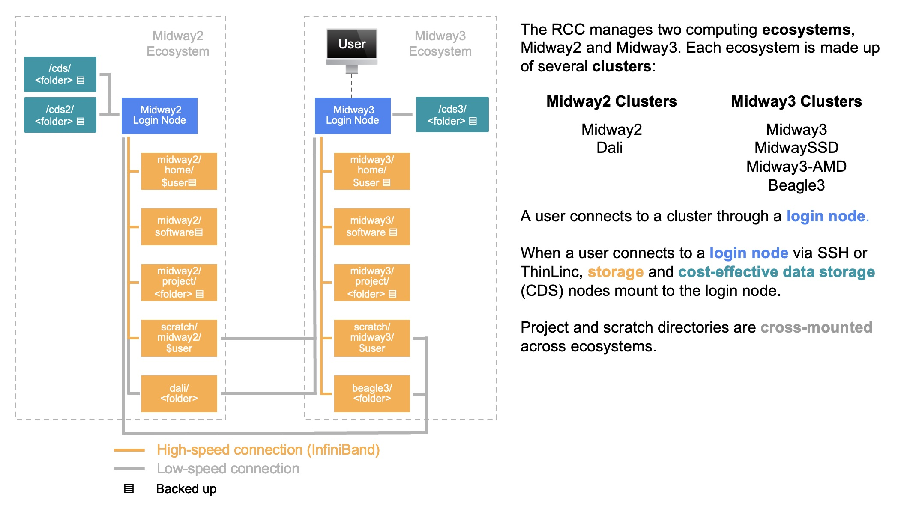

System Layout
Midway2, Midway3, and Beagle3 have a high-performance GPFS shared file system that houses private home directories, shared project, project2, and beagle3 spaces, and high-performance scratch space. The shared and scratch directories of Midway2, Midway3, and Beagle3 are 'cross-mounted', meaning that they are accessible from system-specific login and compute nodes. However, /home, /software, and /snapshots are specific to each cluster and their respective login nodes.

Folder Access
You and you alone have access to your personal home directory (/home/<CNetID>), whereas everyone who is a member of your research group (pi-<PI_CNetID>) has access to your project folder (/project/<PI CNetID>).
Quotas
The amount of data that can be stored in home directories, project directories, and shared scratch directories is controlled by quota. RCC enforces hard and soft limits on quotas. A soft quota can be exceeded for a short period of time, called a grace period. The hard quota cannot be exceeded under any circumstances.
| Name | Location | Soft Quota | Hard Quota | Suitable For |
|---|---|---|---|---|
| Home | /home/$USER |
30 GB (or 300K files) |
35 GB (or 1M files) |
Personal data |
| Project | /project2/<folder> |
varies | varies | Shared data, environments |
| Scratch | /scratch/midway2/$USER |
100 GB (or 10M files) |
5 TB (or 20M files) |
Temporary files |
| DaLI | /dali/<folder> |
varies | varies | Shared data, environments |
| Name | Location | Soft Quota | Hard Quota | Suitable For |
|---|---|---|---|---|
| Home | /home/$USER |
30 GB (or 300K files) |
35 GB (or 1M files) |
Personal data |
| Project | /project/<folder> |
varies | varies | Shared data, environments |
| Scratch | /scratch/midway3/$USER |
100 GB | 5 TB | Temporary files |
| Beagle 3 project | /project/<folder> |
varies | varies | Shared data, environments |
| Beagle 3 scratch | /scratch/beagle3/$USER |
400 GB (or 5.1M files) |
1 TB (5.6M files) |
Temporary files |
| Name | Location | Soft Quota | Hard Quota | Suitable For |
|---|---|---|---|---|
| CDS | /cds/<folder> |
varies | varies | Long-term, less frequently accessed shared data. |
| CDS2 | /cds2/<folder> |
varies | varies | Long-term, less frequently accessed shared data. |
| CDS3 | /cds3/<folder> |
varies | varies | Long-term, less frequently accessed shared data. |
To check your current quotas, use the following commands:
quota -u $USER
rcchelp quota
Explain a typical output
---------------------------------------------------------------------------
fileset type used quota limit grace
---------------- ---------------- ---------- ---------- ---------- --------
home blocks (user) 8.77G 30.00G 35.00G none
files (user) 157865 300000 1000000 none
scratch blocks (user) 101.07G 100.00G 5.00T 30 days
files (user) 193028 10000000 20000000 none
---------------- ---------------- ---------- ---------- ---------- --------
>>> Capacity Filesystem: project2 (GPFS)
---------------- ---------------- ---------- ---------- ---------- --------
pi-drpepper blocks (group) 59.10T 60.00T 60.00T none
files (group) 45825436 384500000 385500000 none
---------------- ---------------- ---------- ---------- ---------- --------
---------------------------------------------------------------------------
| Field | Meaning |
|---|---|
| fileset | File set or file system where this quota is valid |
| type | Type of quota. *Blocks* are the amount of consumed disk space. *Files* are the number of files in a directory. Blocks (or files) quotas can be set at the user or group level. |
| used | The amount of disk space consumed or the number of files in the specified location. |
| quota | The *soft quota* (disk space or file count) associated with the specified location. It is possible for usage to exceed the soft quota for the grace period or up to the hard limit. |
| limit | The *hard quota* (disk space or file count) associated with the specified location. When your usage exceeds this limit, you will NOT be able to write to that filesystem. |
| grace | The amount of time remaining that the soft quota can be exceeded. *None* means that the quota is not exceeded. After a soft quota has been exceeded for longer than the grace period, it will no longer be possible to create new files. |
Over quota?
If you exceed your quota, it can lead to errors since numerous applications may become unable to function properly. See our data management FAQ for multiple strategies for getting back under quota.
High-Performance Storage
Home Space
Every user has Midway2 and Midway3 home directories /home/$USER. Midway2 home dierctory is accessible from Midway2 and DaLI login nodes, while Midway3 home directory from Midway3, Beagle3, and SSD login nodes. Home directories are generally used for storing files that do not need to be shared with others and are only accessible by their owner (mode 0700).
Research Space
New PIs are eligible to receive Midway3 startup storage for the duration of their appointment at UChicago. Every user who belongs to one or many pi-<PI_CNetID> groups may have access to the shared Midway3 project directories located at /project/<PI_CNetID> and/or (for old PI accounts) to the workspace Midway2 project space /project2/<PI_CNetID>. Members of a beagle3 group are additionally authorized to access Beagle3 project space at /beagle3/<PI_CNetID>. All these directories are accessible by all members of the PI's group and are generally used for storing, processing, and analyzing research data that needs to be shared by members of the group. The default group ownership is set to the PI group with read-write permissions for existing and newly created files and directories using a sticky bit (mode 2770). Users may request access to multiple research spaces by submitting a request to be approved by the PI.
Scratch Space
Global Scratch
High-performance shared scratch spaces on Midway2 /scratch/midway2/$USER, Midway3 /scratch/midway3/$USER, and Beagle3 /scratch/beagle3/$USER are intended to be used for reading or writing data required by jobs running on the cluster. The default permissions for scratch space allow access only by its owner (mode 0700).
Warning
Scratch space is neither snapshotted nor backed up; it should always be viewed as temporary, short-term storage only. It is the user's responsibility to ensure any important data in scratch space is moved to persistent storage.
Local Scratch
There is also a scratch space that resides on the local solid-state drives of each node and can only be used for jobs that do not require distributed parallel I/O. The capacity of the local solid-state drives varies across the systems and may depend on the usage of the node if your job resource request does not give you exclusive access to a node.
It is recommended that users use the local scratch space if they have high throughput I/O of many small files ( size < 4 MB) for jobs that are not distributed across multiple nodes. To write files to local scratch, use environment variables $TMPDIR or $SLURM_TMPDIR, which are set to /tmp/jobs/${SLURM_JOB_ID} and add a line at the very end of your Slurm script to copy or move the output to the research space upon job completion. Otherwise, all temporary files will be purged once the job is completed or crashed.
To check the size of the local scratch, submit an interactive job and execute the following command on the compute node:
df -h $TMPDIR
Cost-Effective Data Storage
In addition to a high-performance GPFS file system, RCC also offers Cost-effective Data Storage (CDS) through the Cluster Partnership Program for long-term data storage. CDS is only available from login nodes and is meant to be used as a storage for less frequently accessed data. Before performing any computation on the data stored on CDS, it first needs to be copied to a high-performance file system.
CDS includes multiple tiers (/cds, /cds2, /cds3) with the new data to be stored in /cds3 cost-effective storage. Additionally, data can be moved from old tiers to the most recent tier using Globus. A user would need to provide the path on each endpoint, such as /cds or /cds2 on Midway2 and /cds3 on Midway3.
Data Recovery and Backups
Snapshots
Automated snapshots for the GPFS directories (home, project2, project, beagle3, and dali) and CDS directories (cds, cds2, and cds3) are available from the login nodes for a limited time. Note that snapshot top-level directories, .zfs and .snap, are hidden and cannot be listed with ls -al. Instead, simply navigate to the directory as provided by the snapshot path:
| Directory | Snapshot kept | Snapshot Path |
|---|---|---|
/home/$USER |
7 daily and 2 weekly | /snapshots/home/<SNAPSHOT>/home/<CNetID> |
/project2/<folder> |
7 daily and 2 weekly | /snapshots/project2/<SNAPSHOT>/project2/<folder> |
/dali/<folder> |
7 daily and 2 weekly | /gpfs3/cap/.snapshots/<SNAPSHOT> |
Note: In order to access DaLI snapshots, first you need to log into one of the DaLI compute nodes.
| Directory | Snapshot kept | Snapshot Path |
|---|---|---|
/home/$USER |
7 daily and 4 weekly | /snapshots/<SNAPSHOT>/home/<CNetID> |
/project/<folder> |
7 daily and 4 weekly | /snapshots/<SNAPSHOT>/project/<folder> |
/beagle3/<folder> |
7 daily and 4 weekly | /beagle3/.snapshots/<SNAPSHOT>/beagle3/<folder> |
| Directory | Snapshot kept | Snapshot Path |
|---|---|---|
/cds/<workspace>/<folder> |
4 hourly, 7 daily, 4 weekly | /cds/<workspace>/.zfs/snapshot/<SNAPSHOT>/<folder> |
/cds2/<workspace>/<folder> |
4 hourly, 7 daily, 4 weekly | /cds2/<workspace>/.zfs/snapshot/<SNAPSHOT>/<folder> |
/cds3/<workspace>/<folder> |
7 daily, 4 weekly, 2 monthly | /cds3/<workspace>/.snap/<SNAPSHOT>/<folder> |
The <SNAPSHOT> refers to the backup time, e.g., daily-YYYY-MM-DD.0Xh30 or weekly-YYYY-MM-DD.0Xh30. To restore a file from a snapshot, simply copy it to where you want it with either cp or rsync or any other preferred method.
Acquiring More Storage
Additional storage is available through:
Cluster Partnership Program - Includes the option to purchase high-capacity and cost-effective storage
Research I Allocation - Includes the option to request a small amount of no-cost high-capacity storage
Research II Allocation - Includes the option to request a small amount of no-cost high-capacity storage